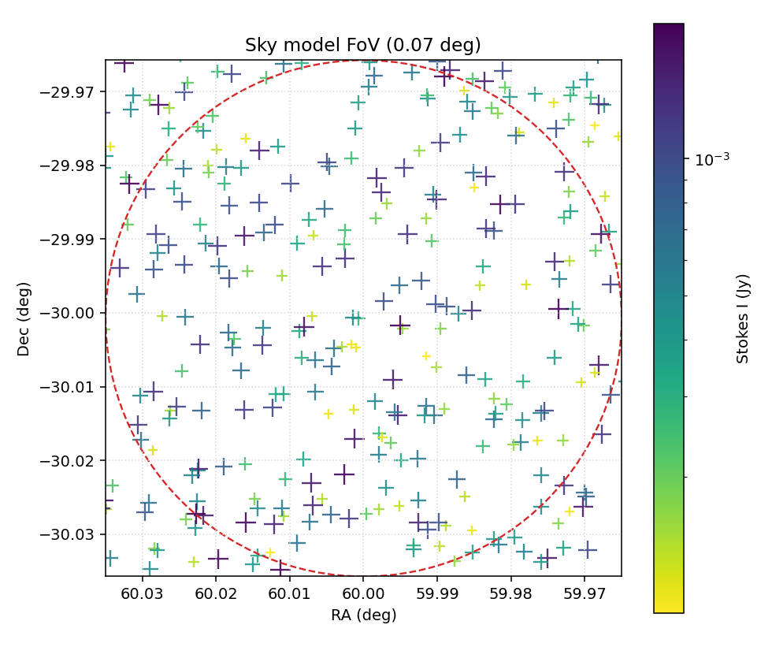
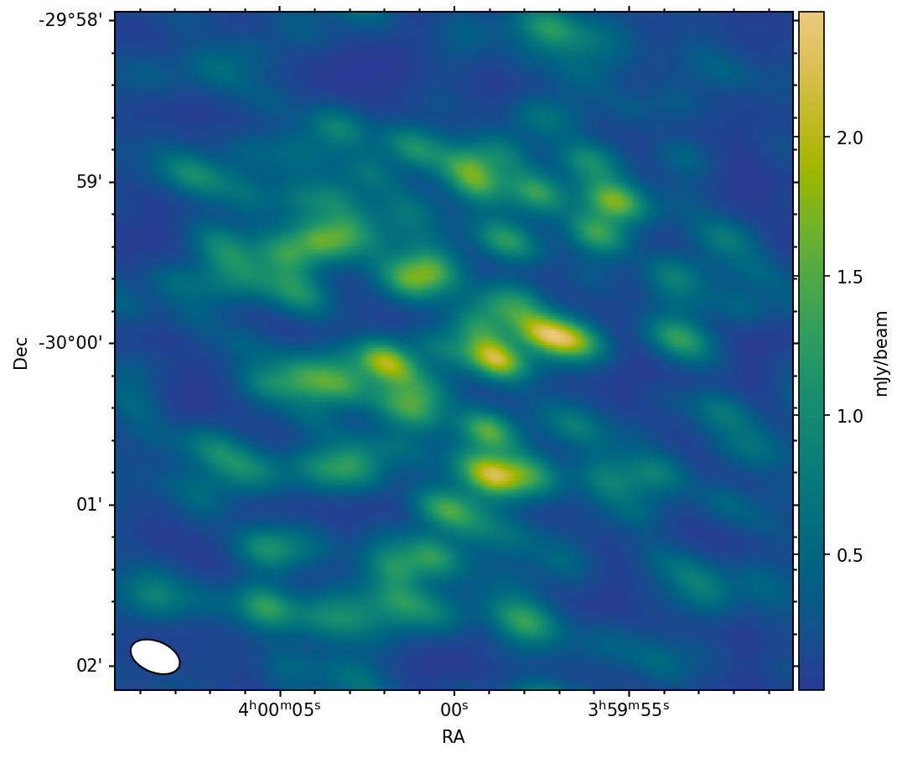

Science motivation
At low frequencies SKA-LOW will routinely map fields where the source density pushes Stokes I toward the confusion limit. In such crowded images, faint sources can blend into the background of stronger neighbors. Polarimetry provides an orthogonal handle: a source with a high degree of circular polarization stands out even when its total-intensity counterpart is buried.
This matters for transient and time-domain programs that rely on short snapshots. Auroral radio emission from star-planet interaction, for example, is expected to be highly circularly polarized because the underlying electron-cyclotron maser process preferentially amplifies one magneto-ionic mode (e.g. Trigilio et al. 2023, arXiv:2305.00809; Yu et al. 2023, arXiv:2310.01240). Detecting the same target in Stokes I alone may be impossible when it sits in a confused field; a Stokes V image can reveal it in minutes.
- Show that a modest 20 min SKA-LOW-AAstar snapshot can recover a fully polarized source in a dense 350-source field.
- Quantify the contrast between the confusion-limited Stokes I image and the comparatively clean Stokes V image.
- Highlight the use case for auroral/star-planet interaction radio signatures, which are characteristically circularly polarized.
Simulation run
A single SKA-LOW-AAstar simulation, imaged with WSClean in Stokes I and Stokes V. The same 20 min snapshot produces two very different maps: a crowded total-intensity field and a polarization-selected detection.
| Setting | Value |
|---|---|
| Facility | SKA-LOW-AAstar |
| Array config | SKA_OST_ARRAY_CONFIG_2_3_1 |
| Stations | 307 |
| Frequency / bandwidth | 300 MHz · 200 MHz (16 × 12.5 MHz) |
| Observation time | 1200 s · 150 × 8 s integrations |
| Sky model | 350 point sources, Stokes I 100 µJy – 2 mJy, square field filling the FoV |
| Polarized source | 1 source at Stokes V = 1 mJy |
| Image / pixel | 512 × 512 · 0.4922″/px · FoV 0.07° |
| Weighting | Briggs robust 0 |
Sky model
The input catalog contains 350 point sources uniformly distributed across the full square 0.07° imaging field, with Stokes I amplitudes drawn log-uniformly between 100 µJy and 2 mJy. One source is assigned Stokes V = 1 mJy while Q = U = V = 0 for all others, producing a single circular-polarization beacon in an otherwise unpolarized population.

Results
The restored WSClean images show the dramatic difference between the confusion-limited Stokes I map and the polarization-selected Stokes V map. In Stokes I the polarized target is visually lost among dozens of brighter sources and sidelobe structure. In Stokes V the same field collapses to a single dominant detection, because every unpolarized source is suppressed to the noise floor.
Restored image: the WSClean output shown below is the restored image (clean model plus convolved residuals). This is the physically meaningful map that would be compared against the input sky model.


Takeaways
- Stokes I is confusion-limited: with 350 sources in a 0.07° field, the target source at 1 mJy is visually indistinguishable from brighter neighbors and sidelobe artifacts.
- Stokes V is a clean filter: the same 20 min snapshot isolates the polarized source because every unpolarized source drops to the noise floor. With Stokes V = 1 mJy the V image still contains realistic noise, making the detection visually convincing.
- Science hook: star-planet interaction and auroral radio emission are expected to be strongly circularly polarized. SKA-LOW polarization snapshots can therefore search for these signatures in fields that would be hopeless in total intensity alone.